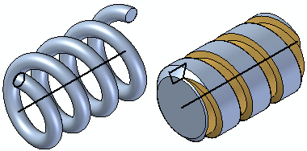

Constructing helical features

You can construct helical features with a cross section that is parallel to the helix axis or perpendicular to the helix axis. The steps for the two options are slightly different.
With the Parallel option, the command bar guides you through the following workflow:
-
Axis & Cross Section Step—Define the plane or sketch for the helix axis and cross section. Within this step you can define the axis and cross section sketch.
-
Draw Axis and Cross Section Step—This step is automatically activated when you define the reference plane for the helix. When editing a helix, you can select this step to edit the helix axis and cross section profile.
-
Start End Step—Define start end of the helix axis.
-
Parameters Step—Define the parameters for the helical path.
-
Extent Step—Define the depth of the feature or the distance to extend the profile to construct the feature.
With the Perpendicular option, the command bar guides you through the following workflow:
-
Axis Plane or Sketch Step—Define the plane or sketch for the helix axis.
-
Draw Axis Step—This step is automatically activated when you define the reference plane for the helix axis. When editing a helix, you can select this step to edit the helix axis.
-
Cross Section Step—Define the plane or sketch for the helix cross section.
-
Draw Cross Section Step—This step is automatically activated when you define the reference plane for the helix cross section. When editing a helix, you can select this step to edit the helix cross section.
-
Parameters Step—Define the parameters for the helical path.
-
Extent Step—Define the depth of the feature or the distance to extend the profile to construct the feature.
For both options, when you have finished defining the path, cross section, parameters, and extent of the helix, the last step is to preview and finish the feature.
When constructing parts with industry standard threads, you should typically use the Hole or Thread commands, not the Helical Protrusion or Helical Cutout commands.
Helical features require significantly more memory to construct and display in part documents, and take significantly longer to process in a drawing view. You should only use helical features where the actual shape of the helical feature is important to the design or manufacturing process, such as with springs and custom or unique threads.
How do I
Construct a helical protrusion in the synchronous environmentConstruct a helical protrusion or cutout in the ordered environment
Construct a helical cutout
Move or edit a helix
Look up more details
Helical Protrusion commandHelical Cutout command
Helical Cutout/Protrusion command bar
Helical command bar
Helix Options dialog box (synchronous environment)
Helix Options dialog box (ordered environment)